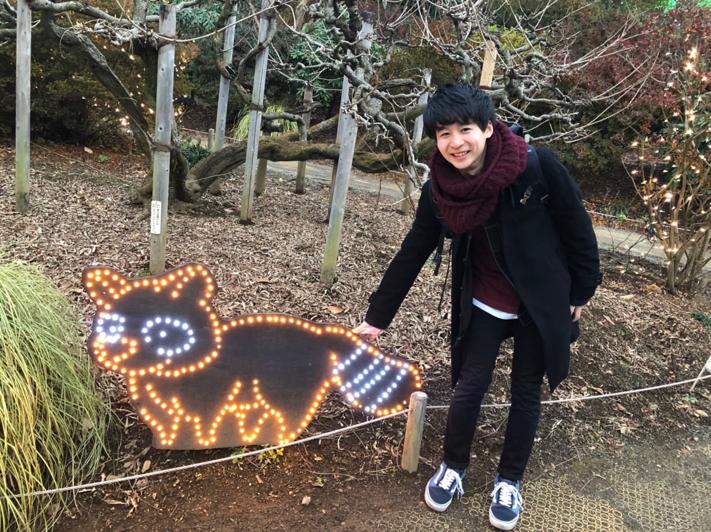

Research Interests
Machine Learning for natural language processing
Dialogue systems
Personalized response generation
Text-to-Speech
Awards
人工知能学会 第96回 言語・音声理解と対話処理研究会(SLUD2022) 対話システムライブコンペティション5 オープントラック 優秀賞(第2位)
人工知能学会 第93回 言語・音声理解と対話処理研究会(SLUD2021) 対話システムライブコンペティション4 オープントラック 優秀賞(第3位)
情報処理学会東北支部 学生奨励賞
人工知能学会 第90回 言語・音声理解と対話処理研究会(SLUD2020) 対話システムライブコンペティション3 オープントラック 優秀賞(第2位)
Publications
International Conference (refereed)
Shiki Sato*, Yosuke Kishinami *, Hiroaki Sugiyama, Reina Akama, Ryoko Tokuhisa and Jun Suzuki. (*equal contribution)In Proceedings of the 2nd Conference of the Asia-Pacific Chapter of the Association for Computational Linguistics and the 12th International Joint Conference on Natural Language Processing (AACL-IJCNLP 2022) Student Research Workshop (SRW) , 2022paper ]
[arxiv ]
Yosuke Kishinami , Reina Akama, Shiki Sato, Ryoko Tokuhisa, Jun Suzuki and Kentaro Inui. In Proceedings of the 29th International Conference on Computational Linguistics (COLING 2022) , 2022.paper ]
[arxiv ]
[poster ]
[code ]
Domestic Conferences / Commentaries / Preprints
岸波洋介 , 赤間怜奈, 佐藤志貴, 徳久良子, 鈴木潤, 乾健太郎. 人間同士の雑談における話題遷移モデリング言語処理学会第29回年次大会（NLP 2023） , 2023.paper ]守屋彰二, 岸波洋介 , 佐藤志貴, 徳久良子, 乾健太郎. 程度を考慮したフォーマリティ変換のためのデータセットの収集と分析言語処理学会第29回年次大会（NLP 2023） , 2023.paper ]
守屋彰二*, 塩野大輝*, 岸波洋介 , 藤原吏生, 木村昴, 松本悠太, 曾根周作, 赤間怜奈, 鈴木潤, 乾健太郎. aoba_v3 bot: 多様な応答生成モデルとルールベースを統合したマルチモーダル雑談対話システム第96回人工知能学会 言語・音声理解と対話処理研究会(第13回対話システムシンポジウム)（SLUD 2022） , 2022.
守屋彰二, 岸波洋介 , 徳久良子, 乾健太郎. 能動的な対話システム実現に向けた談話マーカーの利用の検討NLP若手の会第17回シンポジウム（YANS 2022） , 2022.
岸波洋介 , 赤間怜奈, 佐藤志貴, 徳久良子, 鈴木潤, 乾健太郎. 人の話題遷移モデリングのための基礎分析NLP若手の会第17回シンポジウム（YANS 2022） , 2022.佐藤志貴*, 岸波洋介 *, 杉山弘晃, 赤間怜奈, 徳久良子, 鈴木潤. 多様な話者との自動対話に基づく雑談システムの自動評価言語処理学会第28回年次大会（NLP 2022） , 2022.paper ]
岸波洋介 , 赤間怜奈, 佐藤志貴, 徳久良子, 鈴木潤, 乾健太郎. 目標指向対話のためのサブゴール設計に基づく発話系列生成第93回人工知能学会 言語・音声理解と対話処理研究会(第12回対話システムシンポジウム)（SLUD 2021） , 2021.paper ]長澤春希*, 工藤慧音*, 宮脇峻平, 有山知希, 成田風香, 岸波洋介 , 佐藤志貴, 乾健太郎. aoba_v2 bot: 多様な応答生成モジュールを統合した雑談対話システム第93回人工知能学会 言語・音声理解と対話処理研究会(第12回対話システムシンポジウム)（SLUD 2021） , 2021.paper ]
[slide ]
岸波洋介 , 赤間怜奈, 佐藤志貴, 鈴木潤, 徳久良子, 乾健太郎. 対話システムの先読み能力実現に向けた未来の展開まで生成する学習戦略の提案と分析2021年度 人工知能学会全国大会 （JSAI 2021） , 2021.paper ]岸波洋介 , 赤間怜奈, 佐藤志貴, 鈴木潤, 乾健太郎. 対話システムの先読み能力を分析可能なタスクの検討言語処理学会第27回年次大会（NLP 2021） , 2021.paper ]藤原吏生*, 岸波洋介 *, 今野颯人, 佐藤志貴, 佐藤汰亮, 宮脇峻平, 加藤拓真, 鈴木潤, 乾健太郎. ILYS aoba bot: 大規模ニューラル応答生成モデルとルールベースを統合した雑談対話システム第90回人工知能学会 言語・音声理解と対話処理研究会(第11回対話システムシンポジウム) ( SLUD 2020) , 2020.paper ]
[code ]
[slide ]
岸波洋介 , 赤間怜奈, 佐藤志貴, 鈴木潤, 乾健太郎. 未来の文脈を利用した対話応答生成NLP若手の会第15回シンポジウム（YANS 2020） , 2020.
Activities
Invited Talk
国際会議報告 (COLING 2022)slide ]
Internship
日本経済新聞社 電子版, September 2022
フューチャー株式会社, August 2022 - September 2022
株式会社日本総合研究所, August 2022
Teaching Assistant
東北大学工学部 Step-QIスクール アドバンス創造工学研修, October 2021 - April 2022
東北大学工学部 創造工学研修, October 2021 - January 2022
Skills & Qualifications
Python
基本情報処理技術者
応用情報処理技術者
統計検定2級
日商簿記検定2級
Education
東北大学大学院 情報科学研究科 システム情報科学専攻 April 2021 - March 2023
東北大学 工学部 電気情報物理工学科 April 2017 - March 2021
福島県立橘高等学校 普通科, April 2014 - March 2017